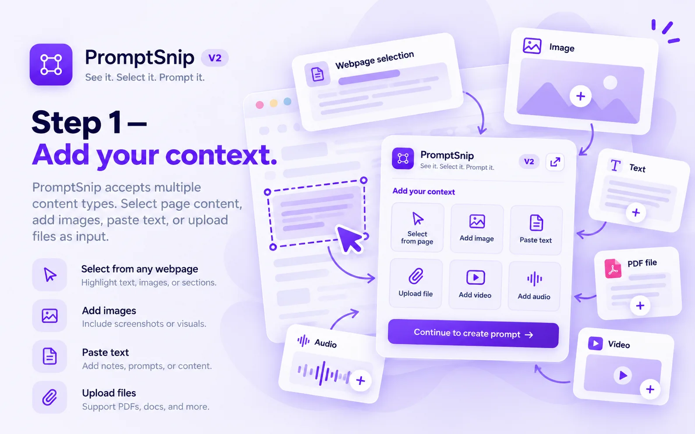

ADD CONTEXT
Start with what you already have.
Select content from the current webpage or switch to Image, Text, Videos or Audio. Forimages, you can work with a single visual or multiple references. For text workflows, you can paste text, add a PDF and provide extra instructions.
